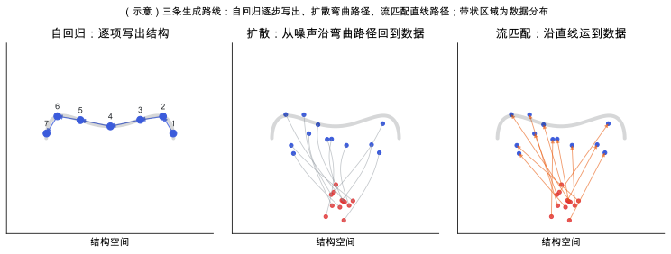

生成模型
生成模型学的是数据分布本身。自回归、变分自编码器、扩散与流匹配这几条路线各自怎样定义“从简单分布到数据”的映射，又各自付出什么代价。
直观阅读需要
- 概率建模与最大似然：分布、似然与采样
只是提示，不需要先读完才能往下看。
直觉直观解释
判别模型学 p(y\mid x)，生成模型学数据分布 p(x) 本身，然后从它采样出新的 x。难点在于：数据分布通常只存在于一个低维流形附近，而采样要从一个容易采样的分布（如标准高斯）出发，把样本“运”到那个流形上。
不同的生成模型，本质上是用不同的方式定义这条运输路径：
- 自回归 (autoregressive)：把对象拆成序列 x = (x_1, x_2, \dots, x_n)，逐项预测条件分布，p(x) = \prod_i p(x_i \mid x_{<i})。生成就是一项一项往下写。语言模型是代表；晶体上把原子和坐标排成序列也可以这样做 [Jiao et al. 2024]。
- 变分自编码器 (variational autoencoder, VAE)：先把数据压进一个低维潜变量 z，再从 z 解码回数据；训练时优化证据下界 (ELBO)。
- 扩散与流匹配：定义一条连续时间的路径，学沿路径的去噪方向或速度场，再用 ODE/SDE 积分回来。细节另立条目，这里只放位置。
- 能量模型与隐式模型：直接定义未归一化的密度（能量模型）或一个生成器网络（GAN），采样和训练都更麻烦，本图不展开。

| 符号 | 是什么 | 图里对应 |
|---|---|---|
| x | 数据样本（分子、晶体、图像） | 带状数据流形上的点 |
| z | 潜变量（VAE） | 未画出，VAE 用编码器压缩到它 |
| \varepsilon | 噪声样本 | 云状噪声区 |
| 路径 | 从噪声到数据的运输路线 | 中、右图的曲线或直线 |
| 步序 1,2,\dots | 自回归的生成顺序 | 左图结构上的编号 |
定义与公式数学与推导
自回归
其中 x_{<i} 是已经生成的前 i-1 项；p_\theta 是带参数 \theta 的网络给出的条件分布。训练就是最大似然：\max_\theta \sum \ln p_\theta(x)。优点：似然精确、训练稳定；缺点：生成顺序是人为定的，误差会沿序列累积。晶体里把“原子种类 + 分数坐标”排成 token 序列，配合周期性注意力，就是 CrystalFormer 一类模型的做法 [Jiao et al. 2024]。
VAE 与 ELBO
其中 q_\phi(z\mid x) 是编码器；p_\theta(x\mid z) 是解码器；p(z) 是潜变量先验；D_{\mathrm{KL}} 是 KL 散度。右边是证据下界 (evidence lower bound, ELBO)。VAE 的问题是后验坍缩和解码器模糊；在晶体生成里，CDVAE 把扩散加进潜空间与解码过程来缓解 [Xie et al. 2022]。
扩散与流匹配（位置）
两者都用连续时间：学一个含 score 或速度的向量场，再解 ODE。它们的训练目标、路径形状和采样器选择决定了样本质量与速度。这里只强调一点：它们给的是样本，不是显式密度；要算似然需要额外解连续性方程或加散度项。
评价：似然、样本质量与多样性
- 似然：自回归和归一化流能直接算；VAE 只有下界；扩散/流匹配要额外工作。
- 样本质量：图像用 FID 一类的分布距离；分子/晶体常用有效性、唯一性、新颖性、与参考结构的 RMSD、能量稳定性。
- 覆盖率：只生成模式中心（mode collapse）时样本好看但不多样；要看生成分布覆盖了多少数据模式。
在本研究线里的样子对应与边界
- 晶体生成的特殊性：输出不是固定维数的向量，而是晶格 + 分数坐标 + 元素种类；晶胞大小可变，原子数可变，还要满足周期性。具体表示与模型见 晶体结构生成模型。
- 化学知识约束：键长、配位、氢键图、质子归属（见 质子归属：盐与共晶）既可以写进训练数据，也可以作为采样后的筛选器。用户主课题“化学知识驱动的生成模型”就是在这条线上。
- 与 CSP 的关系：生成模型负责产生候选，晶体结构预测：搜索与排序 负责能量排序与筛选；生成模型的“命中率”最终要用能量和实验结构来检验，而不是只看有效性。
- 数据增强：本周雷达里有工作用合成晶体数据做扩散预训练，再迁移到性质预测；这类用法要注意合成数据与目标分布的偏差。
常见坑对应与边界
- 只报有效性，不报能量：几何上合理的结构可能能量很高、根本无法结晶。至少要报相对能量或与已知结构的相似度。
- 训练集泄漏：测试集的化学组成或构型在训练集里出现过，新颖性指标失效。
- 把样本质量当似然：扩散模型样本好，不代表密度估计准；两者要分开评价。
- 忽略对称等价：晶体生成里，置换原子、换基矢、空间群操作都是同一个结构；评价和损失都要处理。
- 条件信息用错：把空间群编号当普通类别特征拼进网络，通常不能保证生成的对称性；要用等变或投影的方法（见 对称性与等变性）。
检验自己对应与边界
子条目
- 晶体结构生成模型生成晶体要同时处理晶胞、分数坐标和周期性，分子晶体还要处理刚性分子、构象和堆积；评价也要按晶体的对称等价来算。
参考资料
论文Xie et al. 2022
尚未实际查阅，目前只是拟查阅书目
论文Jiao et al. 2024
尚未实际查阅，目前只是拟查阅书目
分类机器学习 · 概念 · 研究线：晶体结构生成 · 状态：草稿